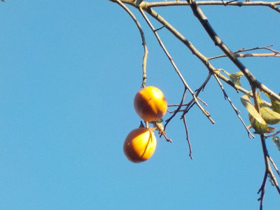
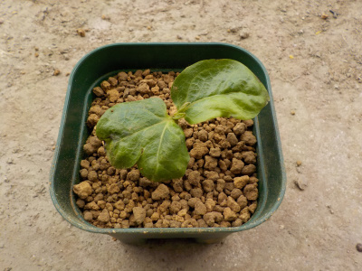
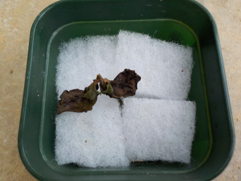
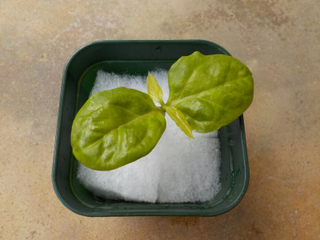
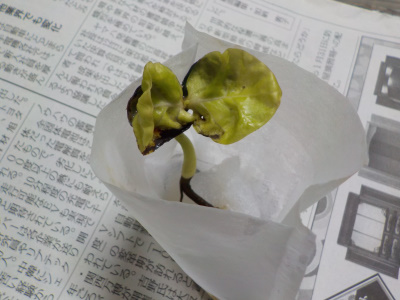
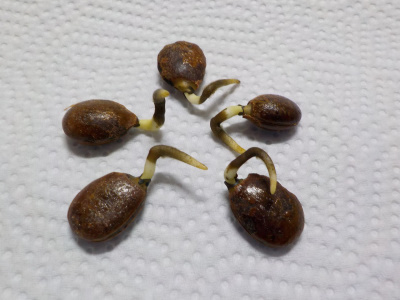
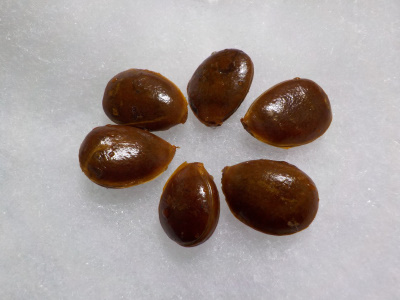
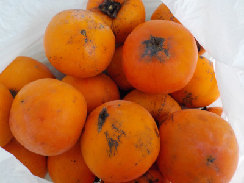
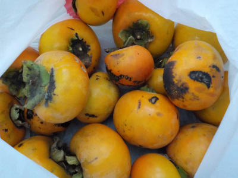
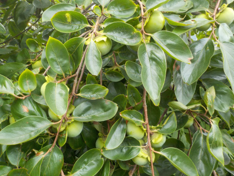

渋柿採りと剪定をしました。
2020/10/18

去年が超豊作だったので、今年は不作でした。
渋柿全部採って時間があったので、伸びすぎた枝と、これから上に伸びそうな枝を剪定しました。
天気が良かったので楽しく剪定できました。
沢山枝を切ってスッキリしました。
2020/10/18

去年が超豊作だったので、今年は不作でした。
渋柿全部採って時間があったので、伸びすぎた枝と、これから上に伸びそうな枝を剪定しました。
天気が良かったので楽しく剪定できました。
沢山枝を切ってスッキリしました。
2020/04/18

水耕栽培に失敗したので、普通に土に植えました。
こっちは枯れないで欲しいです。
2020/03/22

水やりをちゃんとしていなかったせいで枯れました。
苗が小さかったのでとっても弱かったです。いい勉強になりました。
2020/03/14

すくすく大きくなっている柿を１本屋外に出しました。
盆栽っぽく育てたいですが、どうなるでしょうね。
2020/02/15

葉っぱの後ろにある黒いのが、種の殻です。
柿は種が大きいので、芽も根も大きいですね。
2020/01/11

種から太い根っこが出ました。
種の殻は堅そうなので、まだ葉っぱが出る感じはしません。
2019/11/13

なんとなーく観賞用の柿の木があってもいいかなーと思って、水耕栽培してる場所に種まきしました。
盆栽に出来るかな？
2019/11/09

ドンドン色が濃くまっています。
甘柿は熟れても美味しくならないのが残念。
2019/10/13
沢山柿が実ったんですが、コンディションが悪いです。

雨風が強い日が多かったかな？
傷がいっぱい。
まだ色が薄いですが、傷があるので部分的に熟しています。
どんどん痛んでいくので、今日から毎日柿を食べます。
2019/07/21
この木だけなんですが、柿が大量についています。

たまたま受粉が大成功だったのかな？
柿の重みで、枝がみんな下向きです。折れずに実が赤くなるといいんだけどな。
2018/10/27
今週は柿三昧です。
2018/05/19
柿の花をじっくり見ました。
2017/10/14
柿が熟れました。
2015/09/27
今年の柿はさっぱりです。
2014/10/18
甘柿を今年初収穫しました。
2014/09/27
渋柿が豊作です。
2014/07/26
セミは柿の木が好きですね。
2013/10/20
柿が美味しくなりました。
2013/09/28
柿の葉が紅葉しました。
2013/09/16
台風で柿の実が落ちた。
畑仕事じゃないよ。